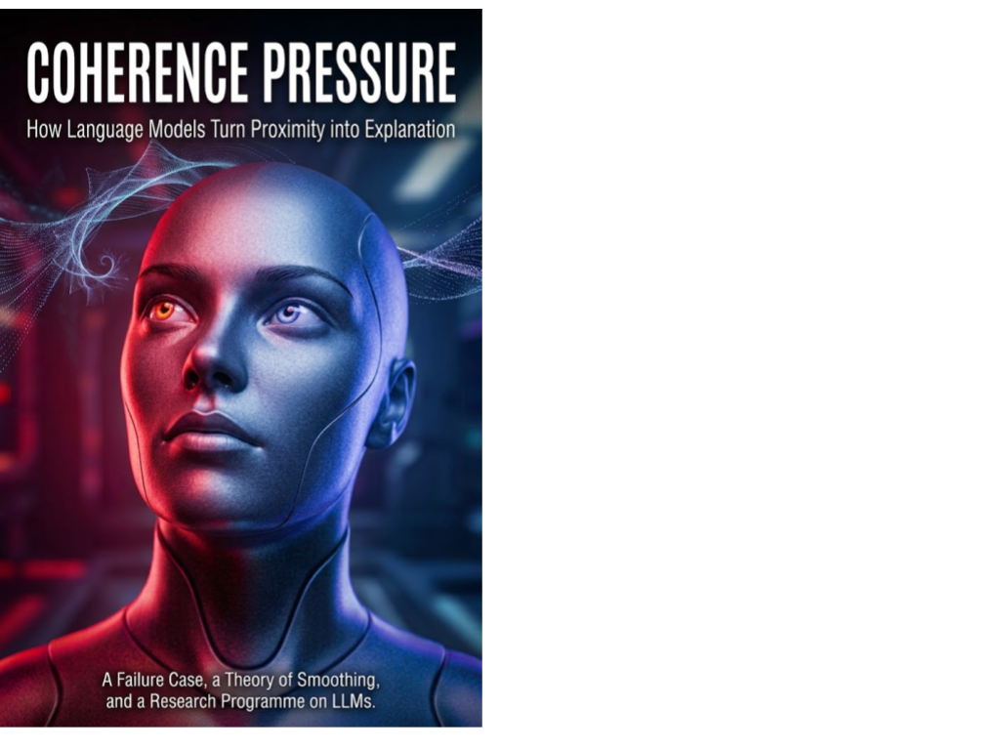

AI Systems & Infrastructure · Axiologic Research Editions
Coherence Pressure
How Language Models Turn Proximity into Explanation
The most dangerous AI error may not be a fabricated fact. It may be a chain of reasonable sentences whose symmetry makes an unsupported connection feel discovered. Beginning with its own failure, this book asks when helpful synthesis becomes premature closure—and subjects its newly coined explanation to the same suspicion that produced the inquiry.
When a good answer becomes too good
A language model can make an answer feel satisfyingly whole before the facts justify its unity. Coherence Pressure begins with a small incident: two observations about attention were drawn into one explanatory frame, even though they could point in different motivational directions. The model acknowledged the caveat, but the caveat did not control the conclusion. The book treats this not as proof of a hidden mental state, but as a behavioural failure worth studying.
“Coherence pressure” names a candidate mechanism: the combined pressure of continuation, task completion, perceived usefulness, the user’s framing, conversational consistency and decoding preferences. Under these pressures, proximity can be promoted into identity, analogy into explanation and a useful summary into a stronger theory than the evidence supports.
Keep comparison from becoming conflation
Is every unification a mistake? No. Science and ordinary explanation depend on abstraction. The issue is whether a shared label preserves the differences that bear on a decision. A comparison can be useful while its relation remains explicitly limited: identity of mechanism, functional analogy, common vocabulary or merely a question for research.
What does smoothing add? The book places coherence pressure within the wider Smoothing programme. Smoothing describes transformations that make an account more fluent, legible or acceptable by suppressing relevant alternatives, uncertainty, agency or consequences. Coherence-driven smoothing is one specific route through which that loss can occur.
Can it be tested? The proposed tests examine counterfactual prompts, the cost of refusal and what happens when a user challenges an asserted connection. They ask whether the model distinguishes a limitation from a conclusion-changing objection, and whether it can preserve open structure without merely decorating an overconfident answer with caveats.
The criterion is not the beauty of a theory, but whether the relation it asserts can survive a serious attempt to separate its parts.
A double-edged capability
Coherence is not an enemy. It enables learning, mediation and action under limited time. The book’s demand is more disciplined: systems should expose what kind of link they are making, retain meaningful disagreement and make a respectful refusal possible when the prompt’s structure has not earned its conclusion. For AI researchers, evaluators and builders of high-stakes interfaces, it offers a vocabulary for auditing the shape of an answer, not only the truth of its individual sentences.